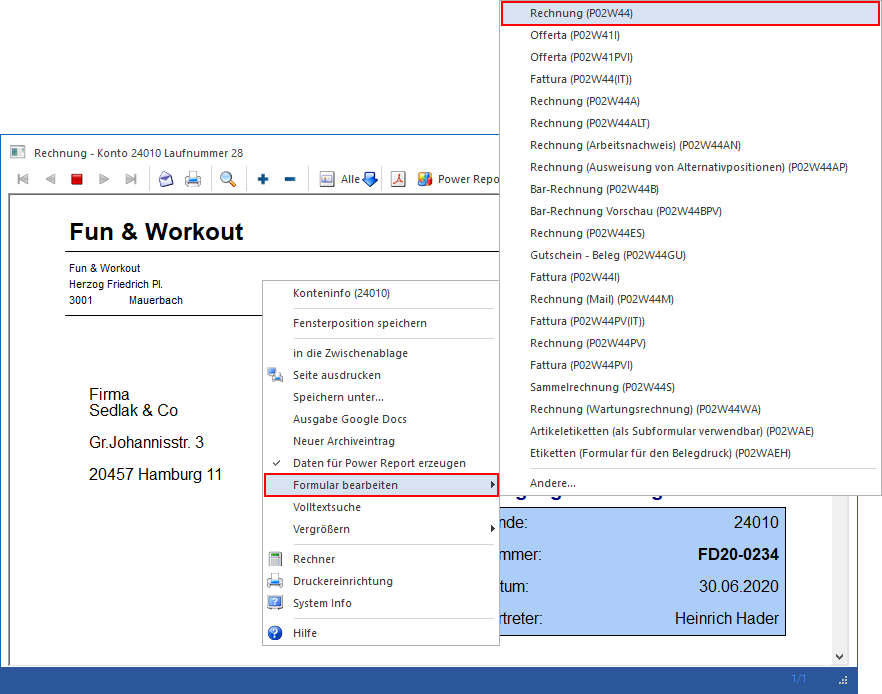
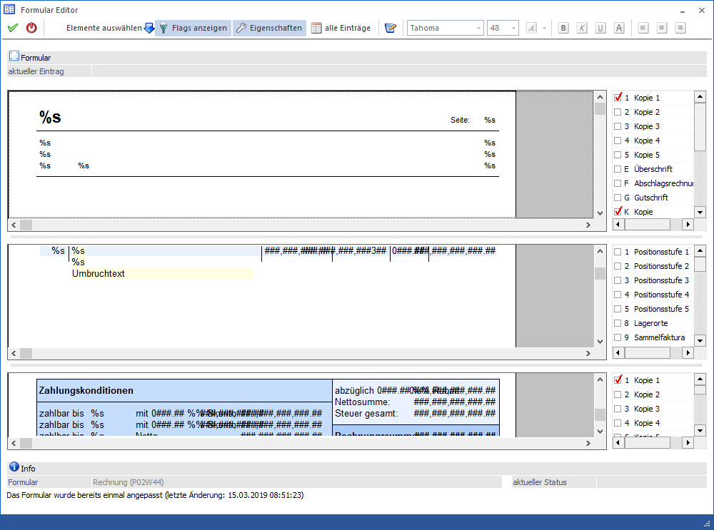
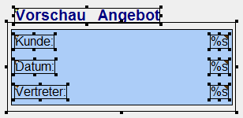
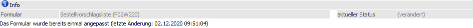

In allen Formularen, die in der WinLine direkt am Bildschirm dargestellt werden, kann über die rechte Maustaste (Funktion "Formular bearbeiten") der WinLine Formular Editor geöffnet werden.
Achtung
Diese Funktion steht nur Benutzern des Typs "Administrator" oder mit der Administratorenberechtigung "Formularadministrator" zur Verfügung. Außerdem kann die Funktion nicht über das Despoolen angewandt werden.

Welches Formular genau bearbeitet werden soll wird durch eine Auswahl innerhalb von "Formular bearbeiten" definiert. Als oberster / erster Eintrag wird hierbei jenes Formular angezeigt, welches gerade am Bildschirm dargestellt wird. Die weiteren Formulare sind "artverwandte" Formular, d.h. sie haben den identischen Programmhintergrund. Ist das gewünschte Formular nicht dabei, so kann über die Auswahl "Andere…" in einen Matchcode gewechselt werden.
Nach Auswahl des zu ändernden Formulars wird dieses im Formular Editor geöffnet.

Nach dem Öffnen des Formulars wird ein Fenster angezeigt, das in 3 Teile (Kopfteil, Mittelteil, Fußteil) geteilt ist.
Für alle 3 Bereiche gibt es eine eigene Listbox, in der die Flags aktiviert werden können. Die Flags steuern, wann welche Elemente angedruckt werden sollen. Dabei ist aber zu beachten, dass beim Formular-Editor auch immer nur die Elemente angezeigt werden, die auch aktiviert wurden. D.h. wenn z.B. ein Rechnungsformular geöffnet wird, werden zuerst gar keine Elemente angezeigt, weil alle Elemente mit einem Flag versehen sind. Erst wenn ein entsprechendes Flag ausgewählt wurde (z.B. Flag A für alle Elemente, die auf der 1. Seite gedruckt werden sollen) werden die entsprechenden Elemente angezeigt.
In den einzelnen Teilbereichen werden - entsprechend der eingestellten Flags - die vorhandenen Elemente angezeigt. Alle sichtbaren Elemente können, wenn sie einmal angeklickt wurden und somit markiert sind - an eine beliebige Stelle verschoben werden, wobei das sowohl mit der Maus als auch mit der Tastatur (Cursor-Tasten) gemacht werden kann. Das kann auch mit mehreren Variablen gleichzeitig gemacht werden, indem mit der Maus ein Rahmen um die gewünschten Elemente gezogen wird. Alle selektieren Einträge werden mit einem Rahmen gekennzeichnet, sodass das (die) aktuelle(n) Element(e) immer erkennbar bleibt(en):

Wurde ein einzelner Eintrag markiert, so wird - abhängig vom Typ des Elements - im Fenster links unten angezeigt, was sich hinter diesem Eintrag verbirgt. Handelt es sich bei dem Element um einen statischen Text, eine Formel oder um eine Ausgabesteuerung, dann wird links unten nur die Position der Variable angezeigt.
Info

Am unteren Ende des Formular-Editors werden zusätzliche Informationen angezeigt:
Ø Formular
Hier wird der Name und die Bezeichnung des Formulars angezeigt.
Ø aktueller Status
An dieser Stelle wird angezeigt, ob das Formular bereits verändert wurde.
Ø Detailstatus
Abschließen wird im Bereich "Info" angezeigt, ob und wann das Formular das letzte Mal bearbeitet wurde.
Buttons
Ø Ok
Durch Anklicken des Buttons "Ok" bzw. der Taste F5 werden alle vorgenommen Änderungen gespeichert und das Formular wird - sofern vorhanden - im Netzwerk auch an alle anderen Benutzer verteilt.
Ø Ende
Durch Anwahl des Buttons "Ende" bzw. der Taste ESC wird der Formular Editor beendet und alle nicht gespeicherten Eingaben verworfen.
Ø Elemente auswählen / neuer Eintrag
Mit Hilfe dieses Buttons kann ein neues Element hinzugefügt werden, wobei über eine Auswahlliste vorab der Typ des Elements definiert wird. Durch platzieren des neuen Elements ins Formular und Doppelklick aus dieses öffnet sich (für die meisten Elemente) das Fenster Formulareintrag, über welches die Anlage in Form eines Assistenten stattfindet (Details entnehmen Sie bitte dem Kapitel Formulareintrag).
Hinweis
Wenn kein Assistent angeboten wird, so erfolgt die Parametrisierung ausschließlich über die Eigenschaften.
Ø Flags anzeigen
Die gesamte Drucksteuerung von Formularen, d.h. wann soll etwas wo ausgegeben werden, wird in der WinLine über sogenannte "Flags" gesteuert.
Durch Anwahl des Buttons "Flags anzeigen" wird im rechten Bereich des Fensters die Flag-Anzeigesteuerung aktiviert bzw. deaktiviert, wobei die zur Verfügung stehenden Flags immer abhängig vom Formulars (gemäß PDI) sind. Mit Hilfe der dort angezeigten Checkboxen kann angegeben werden, welche Elemente von welchem Prozess angezeigt werden sollen.
Ø Eigenschaften
Durch Anwahl dieses Buttons wird das Fenster Eigenschaften aktiviert bzw. deaktiviert. Innerhalb des Fensters werden, je nach Fokussetzung, die Detaileinstellung zu dem Formular oder dem gewählten Element angezeigt.
Ø alle Einträge
Durch Anwahl des Buttons "Alle Einträge" im Formular Editor öffnet sich das Fenster Formulareinträge. In diesem werden alle Elemente des Formulars angezeigt.
Ø Eigenständigen CWLPDFE aufrufen
Durch Anklicken dieses Buttons, der nur zur Verfügung steht, wenn die erforderliche Lizenz vorhanden ist, wird der externe Formular Editor gestartet, welcher noch weiterreichende Funktionen bietet (Details hierzu entnehmen Sie bitte der WinLine Hilfe.).
In Abhängigkeit des markierten Elements im Formular stehen folgende Funktionen zusätzlich zur Verfügung:
Ø Schriftart und Farbe
Mit Hilfe dieser Einstellungen kann die Schriftart, die Schriftgröße und die Farbe definiert werden.
Hinweis 1
Handelt es sich bei dem Element um einen RTF-Text, dann bestimmt die Formatierung des Textes selber die Darstellung.
Hinweis 2
Die zur Verfügung stehenden Schriftarten, Schriftgrößen und Farben werden im Programm CWLCTK definiert. Sollte die gewünschte Auswahl nicht zur Verfügung stehen, so können über die rechte Maustaste (Funktion "Spezialfont") Sondereinstellungen getätigt werden.
Ø Fett
Bei markierten bzw. neuen Elementen erfolgt die Textdarstellung in fett.
Ø Kursiv
Bei markierten bzw. neuen Elementen erfolgt die Textdarstellung in kursiv.
Ø Unterstrichen
Bei markierten bzw. neuen Elementen erfolgt die Textdarstellung unterstrichen,
Ø Durchgestrichen
Bei markierten bzw. neuen Elementen erfolgt die Textdarstellung durchgestrichen.
Ø Linksbündig
Die markierten bzw. neuen Elemente werden linksbündig ausgerichtet.
Ø Zentriert
Die markierten bzw. neuen Elemente werden zentriert ausgerichtet, wobei die Zentrierung nicht auf die Mitte des Formulars, sondern auf die hinterlegte Spalte durchgeführt wird.
Ø Rechtsbündig
Die markierten bzw. neuen Elemente werden rechtsbündig ausgerichtet.